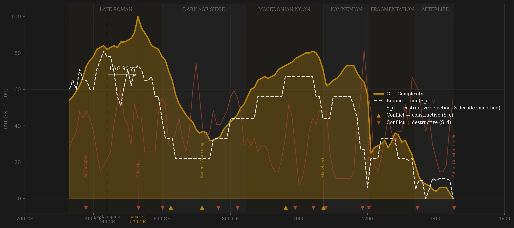
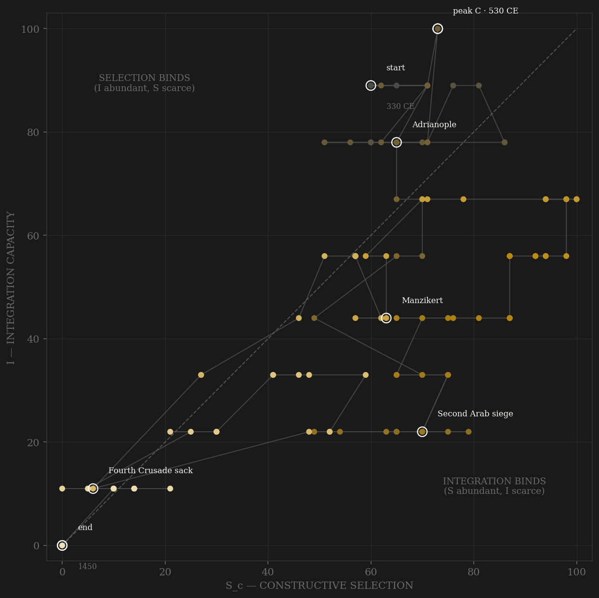

Byzantium is the sample's longest single arc — 113 decades under one continuous state apparatus — and its cleanest demonstration that the two S definitions date different things. Under v2 contestability the engine peaks in the 440s: the university of Constantinople endowed (425), the Codex Theodosianus issued (438), the walls rebuilt in sixty days by the circus factions while Attila watched, a Thracian ranker (Marcian) reaching the purple, Chalcedon managed by synod — maximum open contest riding a still-unified Mediterranean. Complexity peaks ninety years later under Justinian: Hagia Sophia, the Corpus Juris, half a million people in the capital, Treadgold's budget and army series at their maxima. Lag +90, PASS. The v1 combat definition instead dates the engine to the 540s — Khosrow burning Antioch, Totila in Italy, war-years at maximum — which sits on the C peak itself: −10, SIMULTANEOUS, the crisis-contamination pattern the amendment was written against. The rest of the arc is the H-RENT-001 exhibit run in slow motion. The dark-age siege state forges a new ladder (thematic officers; two peasant emperors end the anarchy and the siege), and the Macedonian noon rebuilds a lesser engine on it — Basil II's 996 land law forcibly re-opening entry against the dynatoi is the polity's channel-A maximum, and the mid-period engine (970s) precedes the mid-period C peak (1030s) by an in-window +60. Then the sale of offices under Constantine IX, pronoia under the Komnenoi, offices 'sold like vegetables' under the Angeloi, grants made hereditary after 1261 — rentier capture proceeding by statute while integration is outsourced to Venetian and Genoese keels. The 1204 sack lands on a state already auctioned; the civil wars of 1321–47 and the Zealot revolution break what remained before the Ottomans arrive to collect a city of forty-five thousand.

The trajectory enters at the upper right — high on both axes, the late-Roman inheritance intact — and spends its first three centuries in the highest S×I region the polity will ever occupy. The seventh century drags it down both axes at once: Egypt severed, the sea contested, the ladder militarized into the themes. The Macedonian recovery climbs the selection axis faster than the integration axis (Basil II's anti-magnate statutes vs an Aegean only lately cleared of corsairs) — the engine echo of the 970s. From the 1040s the path walks down the selection axis almost monotonically: office-sale, then kinship government, then auction — the phase portrait of rentier capture, two centuries of A-channel decay with integration briefly propped by Italian carriers who are themselves the leak. 1204 snaps both axes to the floor; the Nicaean interlude is a small, honest loop upward; after 1261 the line grinds along the bottom, pinned at S≈0 for its final century — the inverse of Tokugawa: Byzantium dies of selection starvation with its integration long since mortgaged to Galata.
Coded by locus and target, never by outcome. Byzantium supplies the rule's eponym at one end and its key exhibit at the other. Adrianople 378: external origin, but the eastern field army and the emperor destroyed inside Thrace — S_d. Manzikert 1071: the mirror case — a frontier field defeat with the core untouched, coded B; what actually handed over Anatolia was the usurpation storm of 1072–78, in which both sides hired Turkish bands city by city as payment. And 1204: the Fourth Crusade was external in origin, but the sack was not a frontier event — it was the physical dissolution of the coordination machinery in place, bureaus, archives, fisc, and court, the empire partitioned on Venetian parchment. The locus rule exists precisely so that this scores as destruction rather than rivalry; coding by outcome would make the proposition circular. The sieges of 626, 674–78, and 717–18 score the other way for the same reason: the ultimate external test met at the walls by machinery demonstrably functioning — Greek fire, the grain fleet, an emperor absent on campaign and the city holding anyway.
| YEAR | CONFLICT | CODE | CODING RATIONALE |
|---|---|---|---|
| 378 CE | Adrianople | Sd | The rule's eponym: external origin, but the emperor and two-thirds of the eastern field army destroyed INSIDE Thrace — core-machinery locus, not frontier rivalry |
| 532 CE | Nika riot | Sd | The united factions crown a rival in the hippodrome; half the capital burned, ~30,000 killed in the suppression — the polity's own coordination machinery in flames |
| 602 CE | Phokas terror | Sd | Maurice and five sons butchered; the professional command purged wholesale while Khosrow II invades — the empire eats its own officer corps, 602–10 |
| 626 CE | Avar–Persian siege | Sc | The khagan and a Persian army at the walls with the emperor absent on campaign — broken by fleet and walls: machinery functioning at maximum external stress, textbook B-locus |
| 717 CE | Second Arab siege | Sc | The caliphate's whole fleet and 120,000 men broken by walls, Greek fire, and winter (as in 674–78) — the decisive external test of the age, core intact throughout |
| 765 CE | Iconophile purges | Sd | Constantine V's persecutions — Stephen the Younger lynched, patricians executed, monasteries secularized: the councils were C, the purges are S_d (state attacking its own monastic-civic tissue) |
| 821 CE | Thomas the Slav | Sd | A rival crowned by the caliph's patriarch besieges the capital for a year with fleets and themes — civil war at full scale |
| 961 CE | Crete retaken | Sc | The Aegean's corsair lock broken — peak reconquest rivalry (Cilicia, Cyprus, Antioch follow within the decade) and the integration circuit's re-opening |
| 989 CE | Skleros–Phokas civil wars | Sd | The magnate rebellions of 976–79 and 987–89: half the empire crowned Bardas Phokas; broken at Chrysopolis and Abydos by Basil II's Varangians — the great-family wars the 996 land law answered |
| 1042 | Deposition of Michael V | Sd | The city and senate blind and depose an emperor in a day — the capital mob as constitutional actor; the office-sale era's opening coup |
| 1071 | Manzikert | Sc | B BY LOCUS: a frontier field defeat — the army broke but the state machinery did not (cf. Pliska 811, an emperor killed on foreign soil, same coding). What lost Anatolia comes next |
| 1078 | Usurpation storm | Sd | Romanos IV blinded at the exchange (1072); Roussel's statelet; Bryennios and Botaneiates both in revolt — each side paying Turkish bands with Anatolian cities: the civil wars, not the battle, hand over the plateau |
| 1185 | Andronikos I terror & Norman sack of Thessalonica | Sd | The aristocracy hanged, blinded, boiled — the Komnenian governing class destroyed by its own emperor; the second city stormed the same year (Alaric rule). Separate events, one ledger row |
| 1204 | Fourth Crusade sack | Sd | THE KEY EXHIBIT: external in origin, S_d by locus and target — not a frontier defeat but the dissolution of the coordination machinery in place; bureaus, archives, fisc, court cease to exist; the empire partitioned on parchment (Partitio Romaniae) |
| 1345 | Civil wars of 1321–47 & Zealot Thessalonica | Sd | The S_d storm that breaks the state before the Ottomans arrive: regency vs Kantakouzenos with Turkish and Serbian armies hired by both sides, social revolution in the second city, the crown jewels pawned to Venice (1343, never redeemed). Ledger row unmarked on the charts — its phase-portrait point coincides with 1204's (both floors); the arc tick still shows |
| 1453 | Fall of Constantinople | Sd | Alaric rule at terminal maximum: external origin, S_d by locus — the machinery extinguished in place, with no Nicaea left to flee to |
| COMPONENT | GRADE | BASIS |
|---|---|---|
| S_c — Constructive (v2 contestability) | ○ scholar-coded | A: elite-entry 0.40 — the open imperial bureaucracy (eunuch cursus, Justin I's ladder, thematic officer promotion, Magnaura/Photios credential culture, Basil II's 996 anti-dynatoi law = peak) and its decay (Constantine IX's sale of offices, Komnenian kinship government + pronoia, Angeloi auction, hereditary pronoia after 1261) — coded from Treadgold 1997, Kazhdan–Epstein 1985, Oikonomides, Ostrogorsky, Choniates · B: peer rivalry 0.30 HARD CAP (Persia to 628, Arab sieges, Bulgars, Rus', reconquest, Seljuks — Manzikert = B by locus; Ottomans; Ankara 1402 = bystander, scores nothing) · C: within-rules contest 0.30 (the seven great councils via synod; Macedonian legal renaissance; 920 and 944–45 successions settled without civil war; hesychast councils functioning through the 1340s apocalypse). No deviation from 0.4/0.3/0.3. Ledger: data/raw/byzantium/coding_ledger_v2.csv |
| S_c — v1 combat (frozen comparator) | ○ scholar-coded | Channel B alone (external-war-only ordinal, min-maxed) — the prior definition's operative content, synthesized per the straight-to-v2 convention; no v1 page ever existed |
| S_d — Destructive | ○ scholar-coded | Locus-and-target: dynastic massacre 337, Adrianople 378, Nika 532, Phokas terror 602–10, Twenty Years' Anarchy 695–717, iconophile purges 760s, Thomas the Slav 821–23, Skleros/Phokas wars 976–89, 1042/1078 coups, Andronikos I terror 1183–85, THE 1204 SACK (S_d despite external origin — the key exhibit), Catalan vengeance 1305–11, civil wars 1321–47 + Zealots, 1453 |
| I — Integration | ○ scholar-coded | Unified-Mediterranean annona/solidus zone (max 530s) → Egypt severed 618/641 → kastra economy → Macedonian reknitting (Crete 961, fair of Thessalonica, Book of the Eparch) → Komnenian recovery riding Italian keels — the 1082 Venetian kommerkion exemption and post-1261 Genoese Galata (customs 200k:30k against the City, Gregoras) coded DOWN as integration outsourced (Laiou ed. 2002, Hendy 1985) |
| C — Complexity | ◐ where Treadgold's numbers carry | 0.30 log Constantinople population (Mango/Magdalino/Jacoby anchors: ~500k Justinianic peak → ~40k dark-age trough → ~300k Macedonian → collapse after 1204) + 0.25 log army size (Treadgold 1995 tables 395–1025: 271k→379k→129k→283k; Birkenmeier, Bartusis after) + 0.25 log budget (Treadgold estimates 7.8–11.3M nomismata → 0.1M terminal) + 0.20 coded building/literary output (Hagia Sophia + Corpus Juris = 10; dark-age chronicle gap = 1; Photios/Psellos eras; Palaiologan renaissance). Anchors bracket every collapse — no interpolation crosses one |
| R — Renewal | ◐ Treadgold estimates | Empire population, millions, raw (26M in 540 → 7M in 780 → 12M in 1025 → 0.25M terminal); post-1204 figures = territory actually ruled — the 1204→1210 drop is the polity shrinking to Nicaea, not mortality |
| E — Entropy | ○ coded, episodes named | Justinianic plague 541–44 + recurrences, plague 746–47, debasement from the 1040s (nomisma to ~8 carats), Alexios' 1092 hyperpyron reform (E falls — the one great restoration), 13th-c. slide, Black Death 1347, last gold hyperpyra ~1353 (Hendy 1985) |
113 decade rows 330–1450, scholar-coded straight-to-v2 by scripts/build_byzantium_sicre.py from Treadgold (1997; 1995 army/budget/population tables), Haldon (1990, 2016), Laiou ed. (2002), Kazhdan–Epstein (1985), Angold (1984), Magdalino (1993), Nicol (1993), Bartusis (1992), Hendy (1985), Mango (1985); per-decade channel ordinals + rationales in coding_ledger_v2.csv, raw components in components_audit.csv. Sc_v1_combat = channel B alone (external-war-only — the prior definition's operative content; no v1 page ever existed). Frozen-protocol lag under BOTH definitions: v2 engine 440 (Theodosian: university 425, Codex 438, walls + Attila, Chalcedon) → C 530 (Justinianic apex) = +90 PASS; v1 engine 540 (Khosrow/Totila war-years maximum) → C 530 = −10 SIMULTANEOUS — the v1 engine sits on the C peak itself, the crisis-contamination pattern the amendment targets. Robustness: smoothed C ties exactly at 530/540 (idxmax takes 530); taking the later decade gives v2 +100 (still PASS) and v1 +0 (still SIM) — no verdict changes. Unsmoothed: v2 +100, v1 −10 (verdicts unchanged). Mid-period echo: restricting to ≥700 (post-Arab-conquest scale reset), v2 engine 970 → C 1030 = +60, in-window. DYNASTY-LUMPING CAVEAT: this series spans Constantinian through Palaiologan houses as ONE polity because the state apparatus is continuous (same fisc, law, senate, capital; even 1204–61 the machinery survives intact-in-exile at Nicaea and returns) — flagged for a possible later split at 1204 per the dynasty-split policy. ○-halo caveat applies as on all scholar-coded pages: the same historiography feeds both S and C coding. Rebuild: build_byzantium_sicre.py, then polity_report.py --slug byzantium